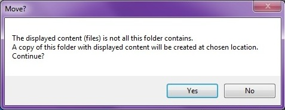

But, if its a specified scan (one or more criterias checked) you may get a notification like this:

Messagebox with notification
Messagebox with notification
What this means is that this folder may contain more files (and possibly subfolders) then the last scan found.
If you choose to continue (by pressing 'Yes'), it will create a folder with the same name at the chosen location,
and then move the folders displayed subfolders and files. (the subfolders and the corresponding files displayed in the datagridview).
Note:
If you decide to move a folder of a certain size, and you decide it takes to long, or for some other reason cancel the move,
it's recommended that you re-scan the selected path to avoid in-accurate file listings.
<Current version 1.0.0.0>